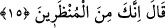

süre ver.” bana mühlet ver ve beni öldürme.
Lanetli İblis, insanları yoldan çıkarmak için geniş zaman bulmak, onlardan öcünü
almak ve ölümden kurtulmak istedi. Çünkü öldükten sonra, bu arzularını
gerçekleştiremezdi.
15. Allah: Haydi, sen mühlet verilenlerdensin, buyurdu.
Allah Teâlâ buyurdu: “Haydi sen süre verilmişlerdensin.” Ecelini birinci sura kadar
tehir ettiklerimdensin. Ancak bu süre, senin istediğin şekilde yeniden dirilmeye (ikinci
sura) kadar değildir. Nitekim bu mühletin müddeti “Sen bilinen bir vakte kadar, süre
verilenlerdensin.” (el- Hicr, 15/37,38) ayetinde beyan edilmiştir ki birinci sura
kadardır. Birinci sura üflendiğinde bütün canlılarla birlikte İblis de ruhunu teslim
edecektir. Birinci sur ile ikincisi arasında kırk yıllık bir vakit vardır.
Cenab-ı Hak İblis’in bazı isteklerini kabul etmiştir. Ancak ona istediği şeylerin
tamamını vermemiştir. Bu konuyla ilgili fetva: “Kâfirlerin duası, istidrac kabilinden
kabul olunur.” şeklindedir.
“Haydi sen, süre verilmişlerdensin.” ifadesi, İblis’den başka süre verilmiş olanların
da bulunduğuna delâlet eder.
İbn Abbas (r. anhüma)’ın şöyle dediği rivayet edilir: “Zamanın akıp gitmesiyle İblis
yaşlanır, ama sonra tekrar otuz yaşına döndürülür.”
Gafiller ölümden mühlet istediler
Aşıklar ise, “Hayır, hayır, hemen olsun” dediler
İblise, süre verilişinin hikmeti konusunda farklı görüşler vardır:
1. İblis’e süre verilmesi, insanları denemek, ihlaslı olanlarla heva ve hevesine
uyanları ayırdetmek ve şeytana muhalefet edenlerin kat kat sevap kazanmaları içindir.
2. Şeytana kıyamete kadar süre verilmesinin sebebi, semada ve yeryüzünde önceden
yapmış olduğu ibadetlere, bir mükafat verildiğinin bilinmesi ve güzel işler yapanın
mükafatının zayi olmayacağına örnek olması içindir.
3. İblis’e kıyamete kadar mühlet verilmesi, son vakte kadar bırakılması onun için
bilmediği cihetten bir istidracdır. Şeytana, kendisinden başka şerlilerin ve kâfirlerin
üstlenmediği günahları yüklenmesi için süre verilmiştir.
4. Onun “karar günü”ne kadar bekletilmesi, akıl sahiplerinin bu fani dünyada en uzun
hayatın kâfirlerin reisine ve facirlerin komutanına has olduğunu bilerek ibret almaları
içindir.
İslâm âlimleri Cenab-ı Hakk’ın İblis ile vasıtasız olarak konuşup konuşmadığı
hususunda ihtilaf etmişlerdir. Sahih olan görüşe göre Allah Teâlâ bir melek vasıtasıyle